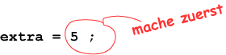
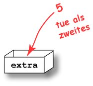

Antwort:
wert enthaelt: 6
wert enthaelt: 6
Hier ist ein weiteres Programmfragment:
int extra; extra = 5;
Die Zuweisungsanweisung ist korrekt. Sie entspricht der Syntax:
variablenname = ausdruck;
Der Ausdruck ist das Literal 5. Es muss keine Berechnung vorgenommen werden. Aber die Zuweisungsanweisung wird immer noch zwei Schritte vornehmen. Der erste Schritt nimmt die 5:

Der zweite Schritt stellt die 5 in die Variable:

Was gibt das folgende Fragment aus?
int menge = 7; menge = 13; System.out.println( "menge enthaelt: " + menge );